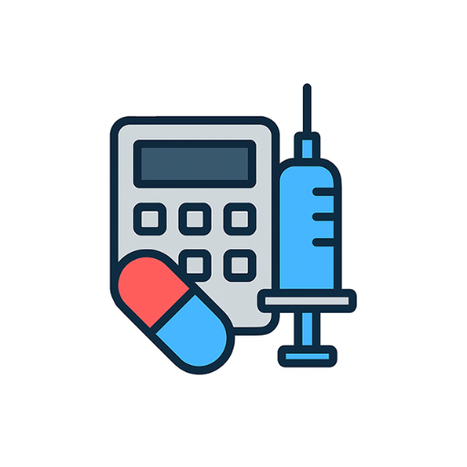

مِدمِیت — اپلیکیشن محاسبات دارویی
محاسبه دوز دارو، نرخ انفوزیون و تبدیل واحدها برای کادر درمان
دانلود از کافه بازاردرباره اپلیکیشن مِدمِیت
مِدمِیت یک ابزار تخصصی برای محاسبات دارویی بالینی است که با هدف کاهش خطاهای دارویی و صرفهجویی در زمان کادر درمان طراحی شده است. این برنامه به پرستاران، پزشکان و دانشجویان علوم پزشکی کمک میکند تا محاسبات پیچیده را سریع و دقیق انجام دهند.
امکانات کلیدی
- محاسبه دقیق دوز دارو بر اساس وزن بیمار
- محاسبه نرخ انفوزیون (Infusion Rate)
- تبدیل واحدهای دارویی
- ابزارهای مخصوص بخشهای ویژه (ICU)
- محاسبات آنی و بدون نیاز به اینترنت
- رابط کاربری ساده و مناسب محیطهای شلوغ درمانی
پرسشهای متداول
اپلیکیشن مِدمِیت چه کاری انجام میدهد؟
محاسبات دارویی بالینی شامل محاسبه دوز دارو بر اساس وزن بیمار، محاسبه نرخ انفوزیون و تبدیل واحدهای دارویی را ساده میکند.
آیا مِدمِیت رایگان است؟
بله، اپلیکیشن بهصورت رایگان از طریق کافه بازار قابل دانلود است.
مِدمِیت مناسب چه کسانی است؟
پرستاران، پزشکان، دانشجویان پزشکی و پرستاری و همه اعضای کادر درمان.